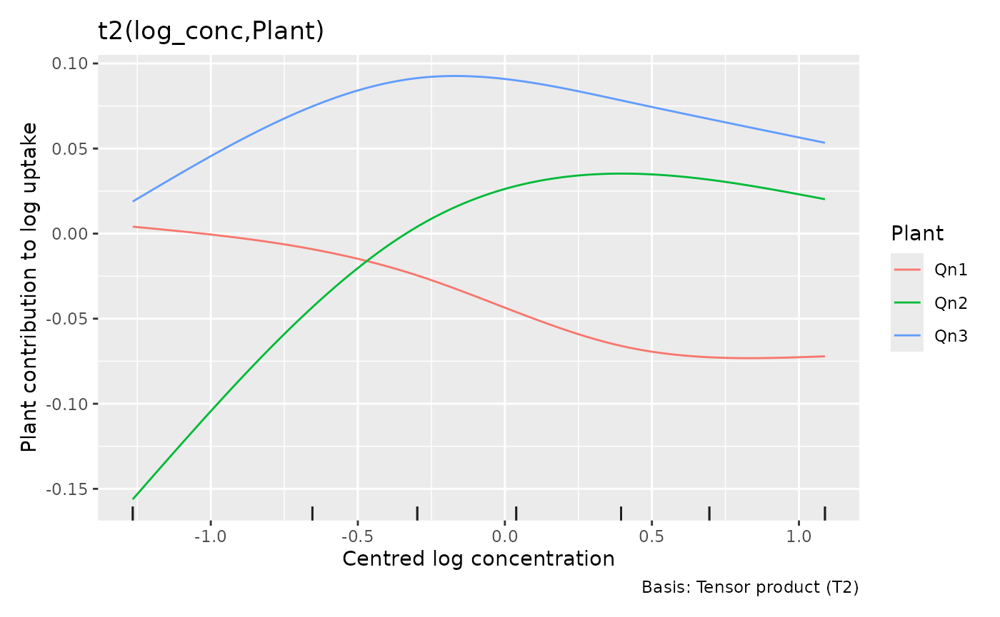
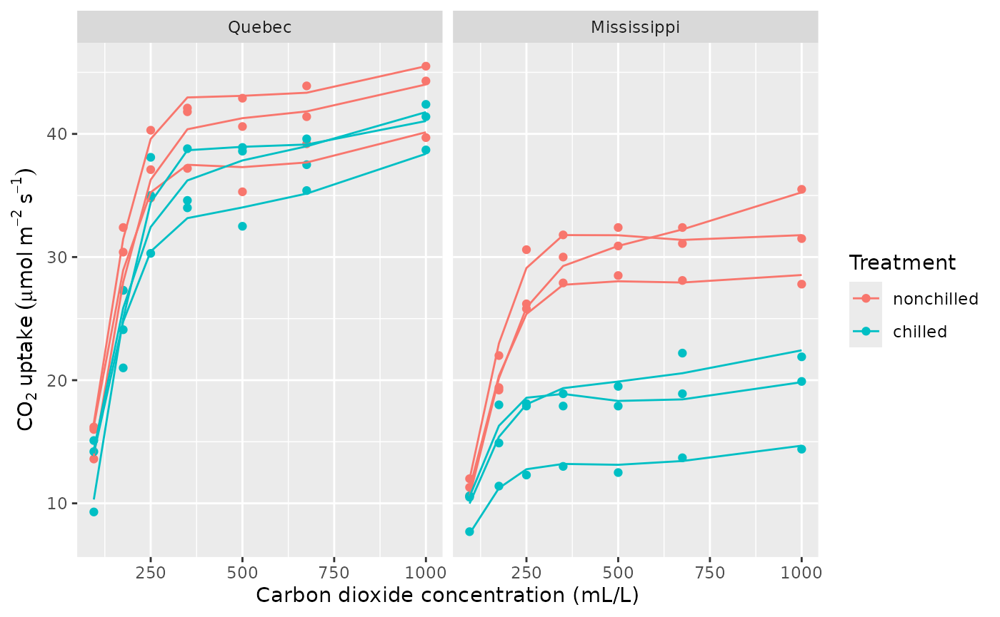
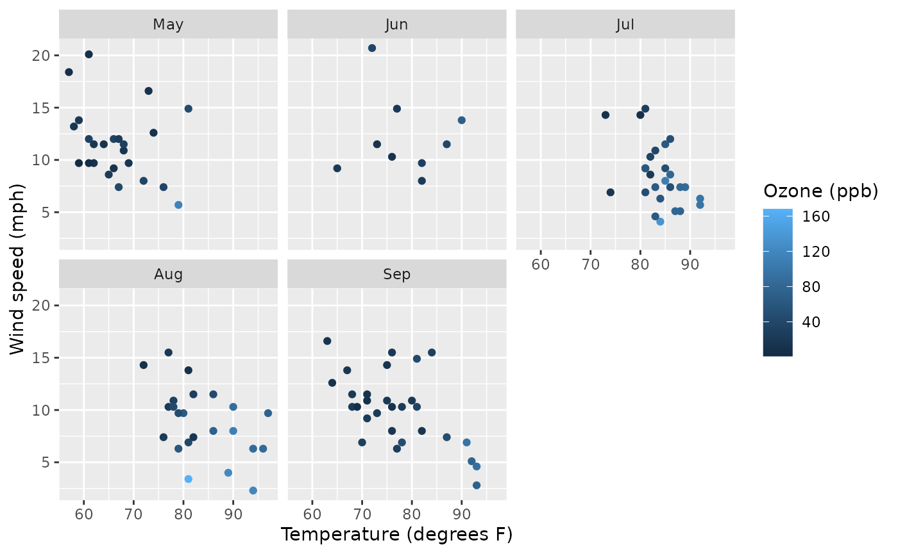
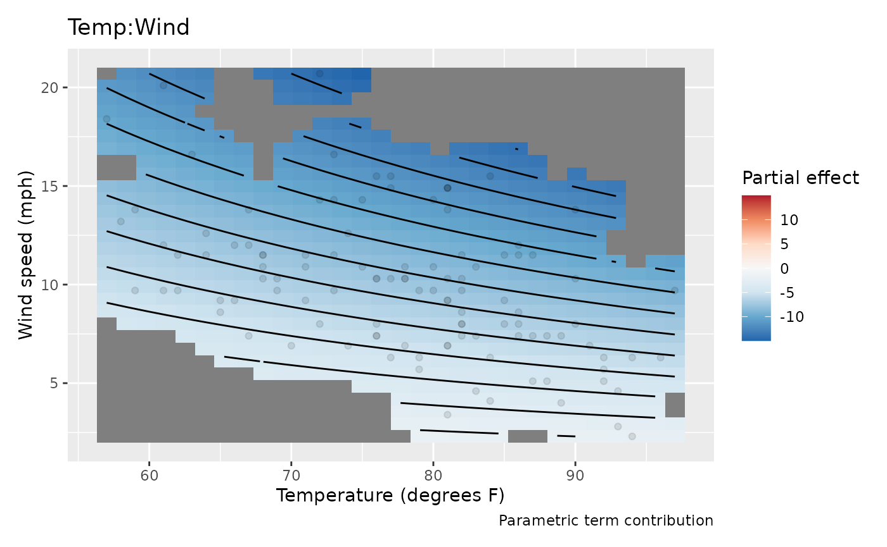
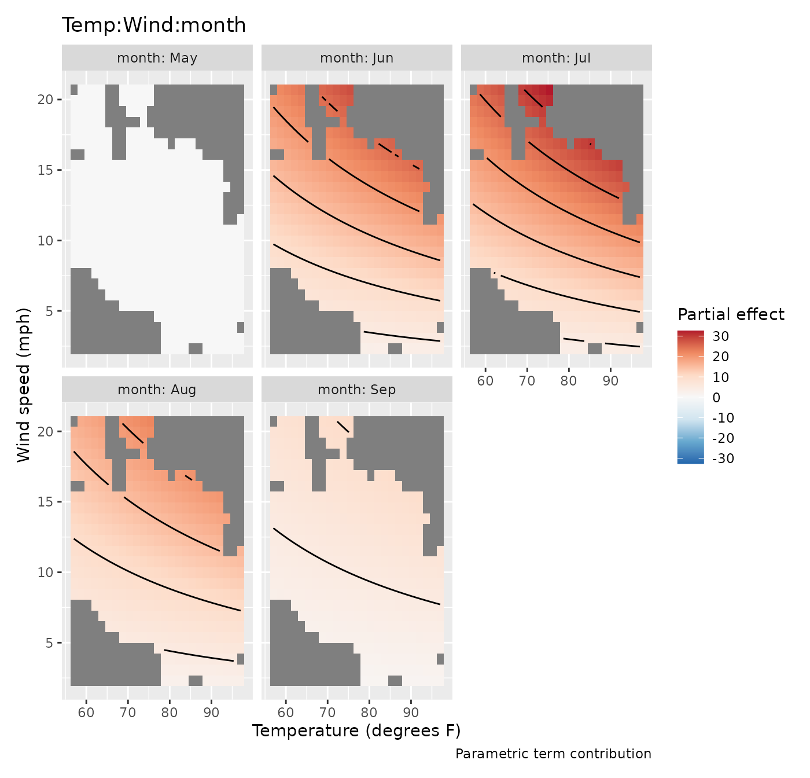
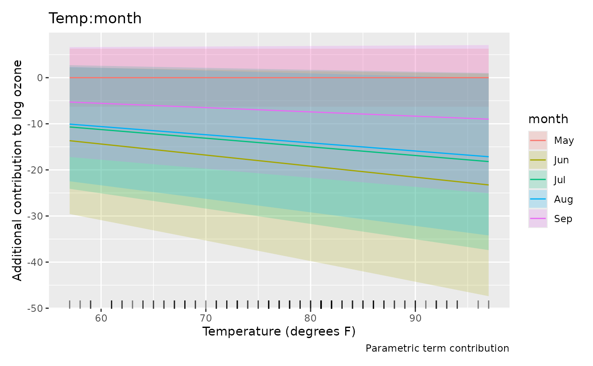
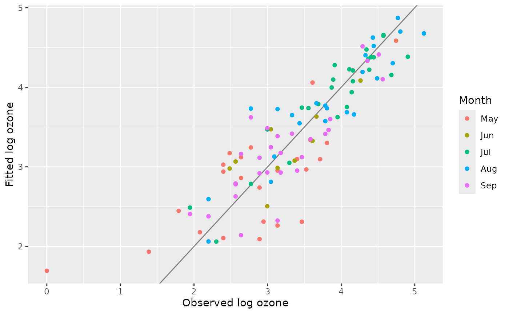
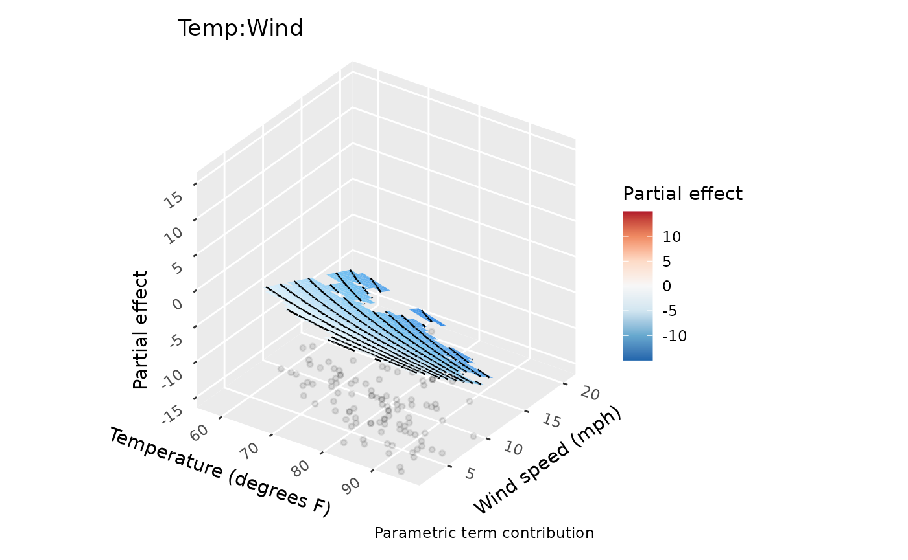

Read smooth effects, interactions and surfaces
Source:vignettes/articles/smooth-effects.Rmd
smooth-effects.RmdAn effect plot isolates one contribution to a model. It helps explain how the model works, but it need not show the expected response. This distinction matters especially with interactions, random effects and nonlinear links. We use the plant experiment from Smooth trends and repeated measurements with glmmTMB to explore flexible individual curves, then daily air quality measurements to read interaction surfaces.
Do plants need different curve shapes?
The carbon dioxide experiment has seven measurements on each of twelve plants, with three plants in each origin-treatment combination. Positive uptake and increasing residual spread motivate a Gamma model with a log link. A shared smooth captures saturation with increasing concentration. We now allow plant-specific smooth deviations, rather than the straight-line deviations used in the glmmTMB article.
plant <- as.data.frame(CO2)
plant$Plant <- factor(plant$Plant, ordered = FALSE)
plant$log_conc <- log(plant$conc) - mean(log(plant$conc))
plant_gam <- gam(
uptake ~ Type * Treatment + s(log_conc, k = 5) +
t2(log_conc, Plant, bs = c("cr", "re"), k = c(4, 12), full = TRUE),
data = plant, family = Gamma(link = "log"), method = "REML")
overview(plant_gam)
#>
#> Generalized Additive Model with 6 terms
#>
#> term type k edf ref.edf statistic p.value
#> <chr> <chr> <dbl> <dbl> <dbl> <dbl> <chr>
#> 1 Intercept parame… NA 1 1 52.7 < 0.001
#> 2 TypeMississippi parame… NA 1 1 -3.31 0.00181
#> 3 Treatmentchilled parame… NA 1 1 -1.26 0.21419
#> 4 TypeMississippi:Treatmentchilled parame… NA 1 1 -2.57 0.01349
#> 5 s(log_conc) TPRS 4 3.85 3.96 79.2 < 0.001
#> 6 t2(log_conc,Plant) Tensor… 48 30.3 43 8.76 < 0.001The tensor product combines a cubic regression spline over
concentration with a random-effect basis over plants. It penalises
plant-specific departures and shares information across plants.
full = TRUE keeps separate penalties for the parts of this
tensor construction. With only seven observations per plant, the small
concentration basis is deliberate. Each plant’s concentration
contribution is the sum of the common curve and its smooth deviation.
The intercept, origin and treatment terms supply the remaining
contributions to its fitted log uptake.
smooths(plant_gam)
#> [1] "s(log_conc)" "t2(log_conc,Plant)"
draw(plant_gam, select = "t2(log_conc,Plant)",
re_levels = list(Plant = c("Qn1", "Qn2", "Qn3")),
xlab = "Centred log concentration", ylab = "Plant contribution to log uptake") &
theme(legend.position = "right") & labs(colour = "Plant")
The numeric covariate is always the horizontal axis even if the
factor was specified first in the tensor formula. re_levels
chooses plants by name; it does not refit the model or remove their
contributions from predictions. The fitted factor ordering is retained.
Selecting plants of one treatment makes the variation among biological
replicates visible. Treatment comparisons require the origin and
treatment terms as well as these plant deviations.
plant$mean_uptake <- fitted(plant_gam)
ggplot(plant, aes(conc, uptake, group = Plant, colour = Treatment)) +
geom_point() +
geom_line(aes(y = mean_uptake)) +
facet_wrap(~ Type) +
labs(x = "Carbon dioxide concentration (mL/L)",
y = expression(CO[2] ~ uptake ~ (mu * mol ~ m^{-2} ~ s^{-1})))
The model explains rapid increases and subsequent flattening in these observed plants. This is conditional on their fitted deviations, rather than a forecast for a new plant. The smooth deviations allow each plant’s curve to bend, whereas straight random slopes only change its tilt. For treatment comparisons, each plant supplies one independent curve: three replicates per origin and treatment combination.
variance_comp(plant_gam)
#> # A tibble: 5 × 5
#> .component .variance .std_dev .lower_ci .upper_ci
#> <chr> <dbl> <dbl> <dbl> <dbl>
#> 1 s(log_conc) 0.320 0.566 0.248 1.29
#> 2 t2(log_conc,Plant)rr 0.000106 0.0103 0.00640 0.0165
#> 3 t2(log_conc,Plant)1r 0.000957 0.0309 0.0186 0.0515
#> 4 t2(log_conc,Plant)2r 0.000502 0.0224 0.0141 0.0355
#> 5 scale 0.00346 0.0588 0.0471 0.0734These are variance components in the random-effect representation of
the penalised splines. Different tensor components can have different
estimated variances, so one variance alone does not describe all
plant-curve variation. The spline rows are not observation variances;
the scale row estimates Gamma dispersion, which multiplies
the squared mean to give response variance. Fits selected by GCV may
lack confidence intervals; the estimates remain available. A model with
no extractable variance components returns an empty table.
Tensor plots follow the same principle in higher dimensions. Two
continuous covariates make a surface; additional numerical dimensions
become conditioning slices and factor dimensions become facets.
n_2d controls each surface axis, while n_3d
and n_4d limit conditioning dimensions. The latter also
limit factor levels to the first levels in fitted order. Use named
re_levels or explicit evaluation data to
choose meaningful groups. With two factor margins, the display is
categorical estimates and intervals, faceted by the second factor; there
is no numeric axis to interpolate between categories. These rules apply
to te(), ti() and t2()
random-effect tensor terms.
Is the temperature association different on calm and windy days?
The airquality data contain daily New York measurements
from May to September 1973. Ozone is in parts per billion, temperature
in degrees Fahrenheit, wind speed in miles per hour, and solar radiation
in Langleys; see ?datasets::airquality for the sources. We
retain complete cases, so our analysis uses the days with all needed
measurements.
The question is whether ozone’s association with temperature depends on wind, and whether that relationship is stable across summer months. We model log ozone with a Gaussian distribution, allow a smooth association with solar radiation, and use a temperature-by-wind-by-month interaction.
ozone <- na.omit(airquality[c("Ozone", "Solar.R", "Wind", "Temp", "Month")])
ozone$month <- factor(ozone$Month, labels = month.abb[5:9])
ozone_gam <- gam(log(Ozone) ~ s(Solar.R, k = 6) + Temp * Wind * month,
data = ozone, method = "REML")
table(ozone$month)
#>
#> May Jun Jul Aug Sep
#> 24 9 26 23 29
overview(ozone_gam)
#>
#> Generalized Additive Model with 21 terms
#>
#> term type k edf ref.edf statistic p.value
#> <chr> <chr> <dbl> <dbl> <dbl> <dbl> <chr>
#> 1 Intercept parametric NA 1 1 -2.56 0.01214
#> 2 Temp parametric NA 1 1 3.64 < 0.001
#> 3 Wind parametric NA 1 1 2.50 0.01423
#> 4 monthJun parametric NA 1 1 1.99 0.04966
#> 5 monthJul parametric NA 1 1 2.31 0.02322
#> 6 monthAug parametric NA 1 1 2.88 0.00501
#> 7 monthSep parametric NA 1 1 1.40 0.16547
#> 8 Temp:Wind parametric NA 1 1 -2.64 0.00975
#> 9 Temp:monthJun parametric NA 1 1 -2.18 0.03153
#> 10 Temp:monthJul parametric NA 1 1 -2.41 0.01808
#> # ℹ 11 more rowsA three-way interaction gives each month its own temperature-by-wind surface. That flexibility makes the model useful for exploring stability, but estimates in sparsely sampled parts of a month’s weather range may be imprecise. Inspect the distribution of observations before interpreting a surface:
ggplot(ozone, aes(Temp, Wind, colour = Ozone)) +
geom_point() +
facet_wrap(~ month) +
labs(x = "Temperature (degrees F)", y = "Wind speed (mph)",
colour = "Ozone (ppb)")
Start with the interaction, then reconstruct the model
parametric_terms(ozone_gam)
#> Temp Wind month Temp:Wind
#> "Temp" "Wind" "month" "Temp:Wind"
#> Temp:month Wind:month Temp:Wind:month
#> "Temp:month" "Wind:month" "Temp:Wind:month"
weather_effect <- parametric_effects(ozone_gam, terms = "Temp:Wind", n_2d = 30)
draw(weather_effect, surface = "tile") &
labs(x = "Temperature (degrees F)", y = "Wind speed (mph)")
This surface shows the coefficient-weighted temperature-by-wind contribution for the reference month, May. Its colours are partial contributions to log ozone. They exclude the intercept, the temperature and wind main effects, the solar smooth, and other interaction terms. The diverging palette centres at zero, making the contribution’s sign visible. To interpret the complete temperature association, combine this interaction with the main temperature effect and the monthly adjustments below.
surface = "tile" uses vector rectangles, which can be
useful in a vector figure. The default "raster" keeps large
plots compact. n_2d = 30 evaluates 30 points along each
surface axis, rather than borrowing the 100-point curve resolution.
Increase n_2d when you need a finer display of the same
fitted surface.
draw(parametric_effects(ozone_gam, terms = "Temp:Wind:month", n_2d = 25),
surface = "tile") &
labs(x = "Temperature (degrees F)", y = "Wind speed (mph)")
The additional monthly contributions appear in conditioning facets.
Under treatment contrast coding the reference month’s contribution is
zero. The other panels are adjustments to the May interaction, not
complete monthly surfaces. Fill limits are shared across facets and
centred at zero. If a surface varies mainly because of poor covariate
support, masking helps avoid giving extrapolation the same visual
prominence as interpolation: dist uses distance after
scaling the displayed axes into the unit square. Support is pooled
across months, so a location left visible may still lie outside an
individual month’s observed weather conditions. Use the monthly
observation plot above to decide which parts of each surface have local
data support.
Numeric-by-factor interactions are grouped curves rather than surfaces:
draw(parametric_effects(ozone_gam, terms = "Temp:month")) &
labs(x = "Temperature (degrees F)", y = "Additional contribution to log ozone")
These slopes must be combined with the reference temperature slope and the wind interactions to describe the model’s temperature association. The conditional comparisons article shows how to compare complete fitted values without isolating contrast-coded terms.
For a direct view of the complete model, predict at observed weather conditions:
ozone$fitted_log <- fitted(ozone_gam)
ggplot(ozone, aes(log(Ozone), fitted_log, colour = month)) +
geom_abline(slope = 1, intercept = 0, colour = "grey50") +
geom_point() +
labs(x = "Observed log ozone", y = "Fitted log ozone", colour = "Month")
The fitted values concern mean log ozone. Exponentiating them gives the conditional median under the lognormal assumption, not the arithmetic mean ozone concentration. The observed-versus-fitted plot shows how the combined terms reproduce log ozone on the sampled days. Because these are daily measurements, also check residuals in time order: remaining serial dependence would affect uncertainty in the monthly comparisons.
Choose a display without changing its statistical meaning
The optional ggcube package can show the same numerical surface in three dimensions:
if (requireNamespace("ggcube", quietly = TRUE)) {
draw(weather_effect, surface = "3d",
surface_3d = list(yaw = 35, persp = FALSE)) &
labs(x = "Temperature (degrees F)", y = "Wind speed (mph)")
}
Height and fill both represent the same partial contribution. A three-dimensional view can emphasise its shape, while a flat surface is often easier to compare across months. View settings change the rendering, not estimates or uncertainty. Curves, factor estimates and spherical maps retain their usual displays. The conditional chunk runs only when ggcube is installed; the flat plots contain the complete analysis.
Parametric effect coordinates now use the model’s covariate scale by
default. For example, a term involving log(x) uses
log(x) on the horizontal axis.
back_transform = TRUE displays original covariate
coordinates without changing effect values or intervals. With saved
smooth estimates, prepare them using
smooth_estimates(model, back_transform = TRUE) before
asking draw() to use that scale. See Transformed covariates for worked
examples, including functions without analytic inverses.
Effect intervals include uncertainty in their model intercept by
default, including its covariance with a parametric term. Setting
overall_uncertainty = FALSE changes that uncertainty
calculation without adding or subtracting the intercept from the
displayed partial contribution. For contrasts between complete model
predictions, use a method that includes all relevant terms and their
covariance rather than subtracting interval endpoints from these
plots.